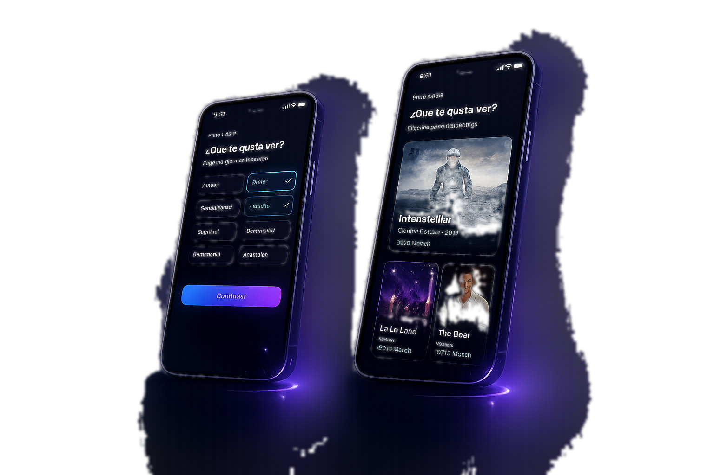

Descubrimiento lento
Hay que recorrer demasiadas categorías. Títulos, imágenes y descripciones no bastan para decidir rápido.
Grupo 5 · Pitch Shark Tank · ~8 min
Plataforma global de streaming · Caso de experimentación
El Day-7 es el outcome de negocio que importa recuperar. Hoy no lo movemos directo: validamos activación y relevancia en la primera sesión — le apuntamos a ese outcome.
Usuarios nuevos no logran descubrir contenido relevante en su primera semana. Catálogo enorme, sin historial, poca señal — consumen poco, se frustran y abandonan.
Day-7 es el outcome de negocio a recuperar. Guárdense esa cifra: el experimento de hoy no lo mueve directamente, pero le apunta vía activación y relevancia en la 1ª sesión.
Hay que recorrer demasiadas categorías. Títulos, imágenes y descripciones no bastan para decidir rápido.
La selección de géneros actual es lenta y pesada. No es que sobre un paso: el paso que ya existe está mal hecho.
El motor no está roto: tarda en aprender porque tiene pocas señales. Problema de velocidad de personalización, no de oferta.
Cadena no virtuosa · hoy
Rediseñar, no agregar la selección de gustos que ya existe en el onboarding: un swipe estilo Tinder donde el usuario acumula entre 3 y 5 preferencias. Señales suficientes para recomendar bien desde la primera sesión. No es un paso nuevo: es el mismo paso, hecho liviano.
Patrones de perfiles afines — backlog.
Procesar señales en tiempo real — spike técnico (después).
Más rápida de validar y menor riesgo técnico — la probamos primero.
El usuario cree que recibe recomendaciones automáticas. En esta fase las armamos con perfiles predefinidos y curación manual (WoZ).
Maquetas rápidas de pantallas. Iterar el flujo sin horas de producción manual.
Problema, mapa de supuestos, hipótesis falsable y desafío de sesgos.
Al inicio creíamos que el problema era el motor. Iterando el mapa de supuestos vimos que era intuición sin evidencia: el cuello de botella era la falta de señales tempranas.
WoZ longitudinal: el usuario cree que recibe recomendaciones reales. Hoy medimos deseabilidad y usabilidad, no factibilidad del motor.
Experimento narrado
Tú das play · Space / P
Stills del flujo
Plan B visualHome curada
Si falla el videoIntención de volver en la semana +17% (meta +15%). Es intención declarada, no retención observada.
Day-7 de la cohorte 29% → 33%. Con n=30–50 no es prueba estadística — luz verde para seguir mirando.
Cumplimos activación y relevancia vs control, sin subir abandono en el onboarding rediseñado. Por eso: perseverar, con un ajuste — la próxima fase conecta estas señales al motor real (ya no curada a mano).
WebFlix · Grupo 5
¿Preguntas?
Problema · Entendimiento ⭐
Hipótesis · Experimento ⭐
Herramientas · Prototipo ⭐
Resultados · Decisión ⭐
Ya validamos que el usuario quiere esto. Ahora necesitamos construirlo de verdad.